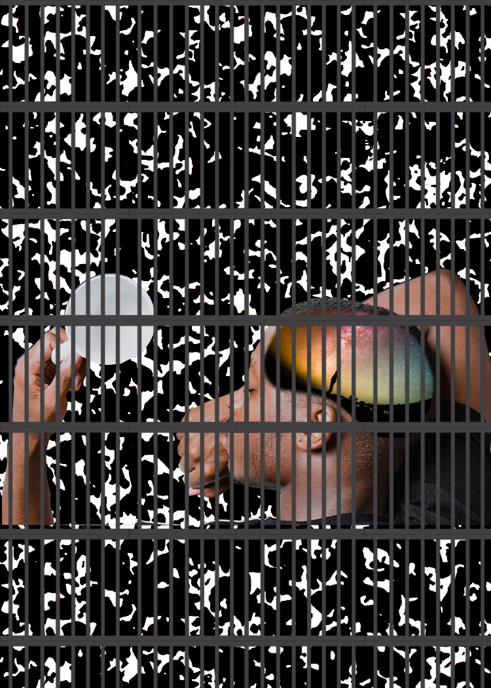

What inspired my motive behind the first photomontage is this overwhelming pressure in academics where we’re expected to perform with less creativity and more in line with the system that’s designed. The background of the image is a composition notebook, one we have all used while in school. A man sits with his head down on the notebook, not drinking his coffee. His head is filled with ideas, and is wholly represented by the theme of outer space. I like to think all the stars represent his imagination and creativity, and yet when you look at the foreground, he’s behind bars. My repeating element incorporated in my photomontage is the jail bars locking the man away both in terms of creativity, and literally. This creative expression is locked behind what I interpret to be society’s expectations of us as we grow. Not only is it difficult to find work and a degree in the arts, but the mechanical jobs and essential jobs today pay higher and are more in demand. The idea is that someday, the man locked away from his imaginative form can be freed, but until then he’s forced into this cycle of daydream and disappointment. And yet he still dreams, still clings to hope and desire— something that cannot quite die.
